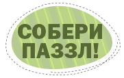
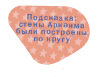
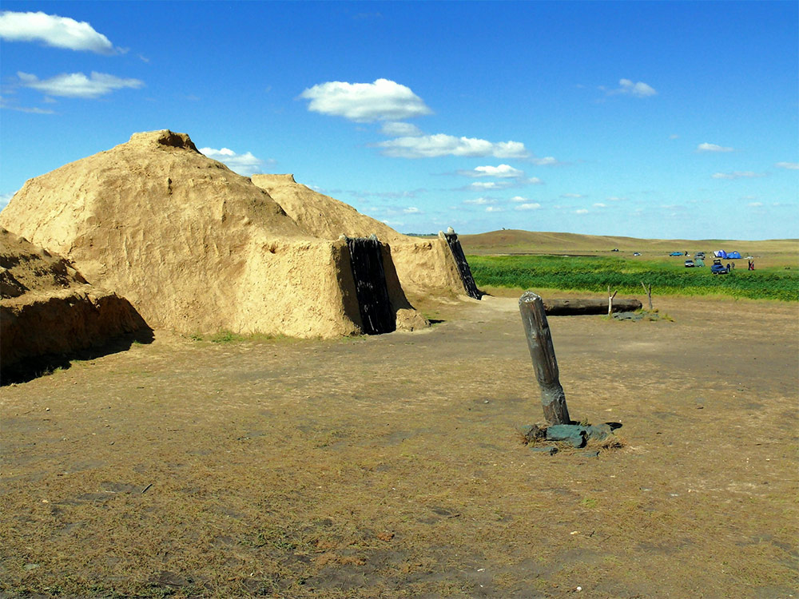

Поставь все фрагменты картинки на свои места, и увидишь, как «инопланетное поселение» выглядело три тысячи лет назад.


Одна из археологических загадок нашей Родины. Древнее поселение Аркаим, найденное в Челябинской области, было построено в те же времена, что и египетские пирамиды. Мы до сих пор не знаем, кто жил в Аркаиме. Некоторые ученые даже говорят, что поселение построили инопланетяне!
Поставь все фрагменты картинки на свои места, и увидишь, как «инопланетное поселение» выглядело три тысячи лет назад.
Как ты думаешь, назначение какого из этих древних памятников до сих пор до конца неясно, как и в случае с Аркаимом?
Стоунхендж в Великобритании имеет много общего с Аркаимом. Ученые до сих пор точно не знают, зачем был построен Стоунхендж, но он находится на той же широте, что и Аркаим, и строения в нем тоже расположены по кругу.
Великая Китайская стена, крупнейший в мире памятник архитектуры, была построена для защиты страны от вражеских набегов. Много общего у Аркаима со Стоунхенджем, чье назначение до сих пор точно не известно.
Пирамиды хранят еще немало тайн, но строились они не для жизни, а для захоронения правителей страны — фараонов. Много общего у Аркаима со Стоунхенджем, чье назначение до сих пор точно не известно.
{kind=link}